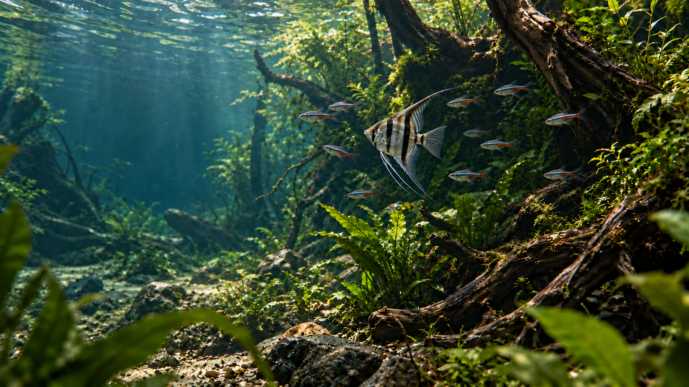
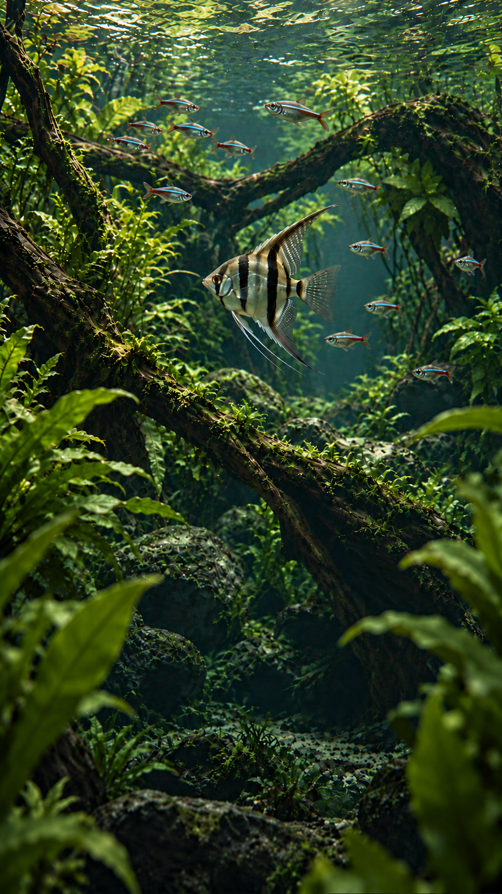

静态构图审核 · 15 October 2026
Aquatic World — 一整个活的水下世界
桌面、手机各自构图：银黑主鱼、不同深度的小鱼群、水面折射与丰富水草。保留上一版 Top bar 和文字布局。这两张是 AI 静态概念稿，实际游动、水草摆动及循环效果尚未验证。
完整静态稿 · 动势标注关闭
桌面 · 鱼群与完整生态

鱼群在右侧形成前后层次，水面波纹、柔和折射与水草姿态提供水流线索。动势方案不会要求所有鱼同时离场，也不再强求空场首尾帧。
手机 · 独立纵向构图

鱼群活动集中在上半部，下半部保留阅读空间。手机画面单独生成，使用与桌面相同的鱼体质感和生态方向。
整场景动势方案
- 1主鱼：缓慢向前游，轻微摆尾与胸鳍推进，再自然转入纵深；身体、鳍条与纹理保持连续。
- 2鱼群：沿不同深度的短路径游动，个体有微小速度差和转向，不做整齐复制，也不同时消失。
- 3水面与光：柔和波纹持续变化，折射光随水面轻移；水流方向与水草响应一致。
- 4水草：柔软叶尖随水流小幅摆动，变化幅度不一；沉木、石头和底砂保持稳定。
标注为建议方向和范围，不是从静态图检测到的运动。静态稿用于确认质感、鱼群密度、构图与动势意图；真实动作、持续性、物理遮挡与循环接缝仍需未来试片判断。